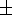

The nonparametric Kruskal-Wallis test was used to test for statistical differences among the three age groups. If this test showed significant differences, multiple Wilcoxon Rank Sum tests were performed to compare two groups at a time. These nonparametric tests make no assumptions about the underlying distribution of the data being compared. p .05 was used as the level for statistical significance in detecting univariate group differences. Statistical analysis was performed using SAS software release 6.12 (Cary, North Carolina). Group results are reported as mean  standard error.